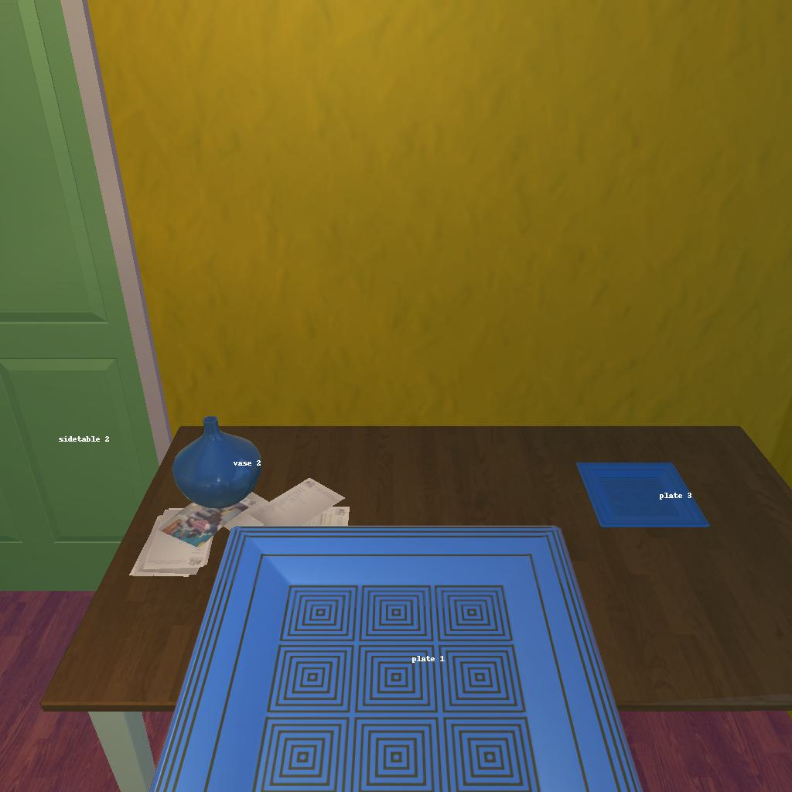

---------------------------------------------------------task: 3---------------------------------------------------------
--------------------------------------------------------------------------------------------------------------------------------------------------------------------
--------------------------------------------------------------------------------------------------------------------------------------------------------------------
Step:--------------------------------------------------------------------------19-------------------------------------------------------------------------------
----------------------------------------
VLM Prompt:
Image1:
Image2:
Image3:
**Instruction**
1. Analyze the provided image to identify all visible household objects, focusing on those relevant to the task description "look at plate under the floorlamp."
2. Use the analysis of the image and the task hint "The agent must find an object of the desired type, locate and turn on a light source with the desired object in-hand." to answer the question: what is the most reasonable action in the choices for the task description "look at plate under the floorlamp"?
4. Decide and write the answer using the template: The answer is: (i): , where i is the real number. If there is no desired object in the image, search every place based on **Initial Observation** to find the object. And if no one is exactly correct, choose a similar answer.
**Initial Observation**
You are in the middle of a room. Looking quickly around you, you can see armchair (1), garbagecan (1), tvstand (1), shelf (1-5), sofa (1), coffeetable (1), sidetable (1-2), drawer (1)
**Answer Choices**
(1): go to armchair 1
(2): go to garbagecan 1
(3): go to tvstand 1
(4): go to shelf 1
(5): go to shelf 2
(6): go to sofa 1
(7): go to coffeetable 1
(8): go to sidetable 1
(9): go to drawer 1
(10): go to shelf 3
(11): go to shelf 4
(12): go to shelf 5
(13): put plate 1 in/on sidetable 2
(14): examine plate 1
(15): examine sidetable 2
**Answer**
Let's think step by step by following the instructions.
----------------------------------------
----------------------------------------
Original Response:
First, we need to locate the plates in the images. In Image1 and Image2, there is a plate labeled "plate 1" on the sidetable next to the sofa. In Image3, there is a "plate 3" on the sidetable near the door. The task description says "look at plate under the floorlamp," but there is no plate under the floorlamp in any of the provided images.
Based on the Initial Observation, there are no plates listed as being on the floorlamp, which suggests that the plates in the images are the ones we should focus on. Since we need to find a plate and then locate and turn on a light source with the desired object in-hand, the most reasonable action would be to first go to the plate and then to the light source, which in this case is the floorlamp.
However, none of the answer choices directly state "go to floorlamp 1" or "turn on floorlamp 1." The closest action related to the plate is "examine plate 1" (choice 14), which is the first step towards completing the task.
The answer is: (14): examine plate 1.
----------------------------------------
----------------------------------------
>>> Refine Original VLM Response and Get Pure Action: examine plate 1
----------------------------------------
-----------------------------------------------------------------
Running time: 12.35554051399231 seconds
Total Money: 1.80814
-----------------------------------------------------------------
-----------------------------------------------------------------
Text Observation:This is a normal plate 1
-----------------------------------------------------------------
UNSUCCEED